Statistical tests of data dispersion are widely used in geochronology to assess whether analytical uncertainties adequately explain the scatter of repeated measurements. Whereas excess scatter (overdispersion) is commonly regarded as a problem to be identified and removed, this paper draws attention to the opposite phenomenon: underdispersion, in which measurements cluster more closely than expected from their analytical uncertainties. Underdispersion may result from incorrectly estimated uncertainties, but can also arise from over-zealous outlier rejection, whereby measurements are selectively removed until the remaining data meet a predefined p-value cutoff or mean square weighted deviation (MSWD) target. Such practices can produce apparently precise but potentially inaccurate geochronological estimates.
This paper introduces a simple graphical method for detecting underdispersion in collections of geochronological data. The method is based on the empirical cumulative distribution function (ECDF) of p-values from chi-squared tests of sample homogeneity. Under the null hypothesis, p-values should be uniformly distributed. Although genuine geological complexity can shift the distribution towards low p-values, there is no natural mechanism that can produce an excess of high p-values. Consequently, the region below the 1:1 line of a p-value ECDF represents a “forbidden zone” that provides a diagnostic for excessive outlier rejection (“Type-II cherry picking”).
Observer drift, iterative outlier removal and optimised LA-ICP-MS
signal windows are mechanisms that can produce underdispersion. Applied
to real data, underdispersion appears in every geochronometer examined.
For fission track analysis (where cherry picking is the only possible
cause of underdispersion), about one third of p-values in the
geochron.org database plot in the forbidden zone. So do 15%
of 650 p-values from Nature journals (rising from 11.5% before
2019 to 17.2% since) and 25% of those underlying the 2020 edition of the
Geologic Time Scale, including 90% of Ar–Ar constraints. Addressing the
problem requires greater emphasis on geological evidence when
identifying outliers, preferably through procedures that are blind to
statistical dispersion, and greater transparency through FAIR sharing of
raw data and data-reduction workflows.
The scientific method is a powerful tool for discovery and objective decision-making (Popper 1959). Statistical hypothesis testing is often used to formalise this process. If an observed experimental result is unlikely under a mathematically defined null hypothesis, the hypothesis is rejected; otherwise, it is retained (Section 1). When used correctly, hypothesis tests are extremely valuable. For instance, powered tests in double-blind clinical trials form the foundation of the pharmaceutical drug approval process1. In this way, hypothesis testing can literally save lives. However, unpowered tests are vulnerable to both conscious and unconscious misuse.
Formalised hypothesis tests create an artificial dichotomy between results that support or reject scientific hypotheses. This binary thinking introduces bias into research findings. Arbitrary p-value cutoffs (typically at \(\alpha = 0.05\)) incentivise researchers to bias data to fit one side of the divide (Amrhein, Greenland, and McShane 2019). When an entire community of scientists tries to reject a statistical hypothesis, it increases the risk of committing a so-called Type I error (false positive). This is a serious issue in the life sciences, which may even cause most published research findings to be false in that field (Ioannidis 2005).
This paper will show that geochronology experiences the opposite problem, whereby hypothesis tests are exclusively used to check whether a dataset is ‘simple’ before proceeding with another statistical procedure (McIntyre et al. 1966). In geochronology, failure of the test indicates the presence of excess scatter (‘overdispersion’), which may be diagnostic of faulty data or geological complexity (Section 2). Removal of perceived ‘outliers’ avoids this complexity and makes life considerably easier. However, taking this approach too far can lead to Type II errors (false negative) and, in the most extreme cases, to ‘underdispersed’ datasets that are ‘too good to be true’ (Section 3).
Geochronologists are increasingly aware of these issues. Over the past decade, several papers and community recommendations have appeared, discussing the geological causes of overdispersion and introducing new statistical strategies to avoid over-zealous outlier detection (e.g., Horstwood et al. 2016; Keller, Schoene, and Samperton 2018; Klein and Eddy 2024; Pieter Vermeesch 2025). Nevertheless, underdispersed datasets are still more likely to pass through peer review than overdispersed datasets, providing an incentive to ‘clean up’ datasets.
A key challenge is that there is currently no clear definition of underdispersion, nor a straightforward way to detect it. This paper addresses that gap by introducing a simple graphical method for identifying underdispersion in geochronological datasets (Section 4). The method is demonstrated using both synthetic (Section 5) and real datasets (Section 6) to evaluate how common underdispersion is in the published literature. Providing an accessible diagnostic tool is an important first step toward solving the problem.
Rare exceptions notwithstanding, most radiometric age estimates are based on multiple analyses (aliquots) per sample. This redundancy of measurements benefits the precision of the age estimates (which scales with the inverse of the square root of the number of analyses) and provides an opportunity to assess the internal consistency of the data. In statistics, it is useful to make a distinction between the true values and their statistical estimates, where
The true values could be the actual ages of some minerals separated from a rock sample and the estimates are dates with some analytical uncertainty; or
The true values could be a pair of 206Pb/238U and 207Pb/235U ratios which may or may not be concordant, and the estimated values are displaced from those true values by some random distance; or
The true values may be isotopic ratio pairs that lie on a mixing line between radiogenic and non-radiogenic end-member components, while the estimates are offset from this mixing line, forming an isochron that can be fitted by weighted least-squares regression.
The difference between the true and estimated values is the result of two contributions:
Analytical uncertainty, which can be estimated from the raw mass spectrometer data by error propagation.
Geological scatter between the true values.
The relative contributions between these two sources of dispersion can be formally tested by formulating a null hypothesis \(H_0\) and an alternative hypothesis \(H_a\):
\(H_0\): All the ages are the same.
\(H_a\): Some ages are different.
The dispersion of the estimated values around the best fitting weighted mean, concordia age or isochron can be quantified using the error-weighted sum of the squared differences, \(\chi^2\). Under \(H_0\), \(\chi^2\) follows a chi-squared distribution with \(\nu\) degrees of freedom, where \(\nu = 1\) for U–Pb concordance, \(\nu = n-1\) for weighted means, \(\nu = n-2\) for two-dimensional isochrons and \(\nu = 2\,n - 4\) for three-dimensional isochrons. This leads to three equivalent ways to evaluate \(H_0\):
High values of \(\chi^2\) lead to the rejection of \(H_0\) in favour of \(H_a\). The cutoff value \(X_c^2\) corresponds to the \(1-\alpha\) quantile of the null distribution, where \(\alpha\) is typically taken to be 5% (Pearson 1900);
The probability of observing a value exceeding \(\chi^2\) under \(H_0\) is known as the p-value of the chi-square test. P-values below \(\alpha\) lead to the rejection of \(H_0\);
The mean squared weighted deviation (MSWD) is defined as \(\chi^2/\nu\). If \(H_0\), is true and \(\nu>20\), then the null distribution of the MSWD is approximately Gaussian with a mean of \(\sim 1\) and a standard deviation \(\sqrt{2/\nu}\). MSWD values fall outside the range of \(1 \pm 2\,\sqrt{2/\nu}\) lead to the rejection of \(H_0\) at (approximately) a 95% confidence level (Wendt and Carl 1991).
Datasets for which \(\chi^2 > X_c^2\), \(p < \alpha\) or MSWD\(\,>1+2\,\sqrt{2/\nu}\) are said to be overdispersed with respect to the analytical uncertainties. Dataset for which \(\chi^2 \approx 0\), \(p > 1-\alpha\) and MSWD\(\,<1-2\,\sqrt{2/\nu}\) are underdispersed.
As explained in Section 1, overdispersion is the phenomenon whereby the observed scatter of the measurements around the mean or isochron exceeds the range expected from the analytical uncertainties alone. This leads to the rejection of \(H_0\) in favour of \(H_a\), which can mean four things:
The analytical uncertainties have been underestimated;
Something has gone wrong during the sample preparation or analysis, causing poor reproducibility of the measurements;
The true values are dispersed due to geological or sample-specific complexities that are not captured by the analytical uncertainties;
The dataset has been selected among a larger collection of measurements to maximise the dispersion. This situation may never occur in geochronology but is actually quite common in other fields of science as detailed in the Appendix (‘Type I cherry picking’).
Overdispersion carries a distinctly negative connotation in geochronology. For example, overdispersed isochrons are known as ‘errorchrons’ (Brooks, Hart, and Wendt 1972), reflecting the concern that weighted least squares regression cannot safely be applied to datasets that exhibit excess scatter around the best fit line. However, this negative reputation is undeserved (Kalsbeek 1992). If the first two scenarios can be ruled out, the presence of overdispersion provides an opportunity to extract additional information about the geological system of interest.
Geological sources of overdispersion include protracted residence times of datable minerals in magmatic systems, slow cooling of minerals with variable closure temperatures, the presence of xenocrysts or common Pb, and the occurrence of Pb-loss (Galbraith and Laslett 1993; Rioux et al. 2012; Keller, Schoene, and Samperton 2018; Klein and Eddy 2024).
The statistical power of the chi-squared test to detect overdispersion steadily grows with increasing analytical precision and sample size. Given a large enough sample with sufficiently small analytical uncertainties, even the smallest amount of geological dispersion becomes discoverable. Given the steady gains in precision and throughput that radiometric geochronology has witnessed over time, it is not surprising that overdispersed datasets become ever more prevalent. Therefore, overdispersed datasets should be expected to be the rule, not the exception (Pieter Vermeesch 2025).
Underdispersion is the phenomenon whereby the measured values cluster together closer than expected from the analytical uncertainties. This may mean two things:
The analytical uncertainties have been overestimated. This can happen when systematic sources of uncertainty are mistakenly treated as random uncertainties. Consider, for example, an LA-ICP-MS session in which instrument drift and elemental fractionation are estimated by analysing reference materials interspersed between the samples. Then it seems logical to add the internal reproducibility of the reference materials to the analytical uncertainties of the samples, in quadrature. However, doing so potentially introduces strong error correlations between the different aliquots of the sample, which may result in overestimated uncertainties (McLean, Bowring, and Gehrels 2016).
The data have been subjected to over-zealous ‘outlier detection’ in order to remove values that are perceived to be in disagreement with \(H_0\). A famous example of this type of behaviour is Gregor Mendel’s study of the genetic traits of garden peas (Mendel 1866). A re-analysis of Mendel’s data by Fisher (1936) using the chi-squared test yielded a p-value of 0.99993, which is ‘too good to be true’. In this paper, we will refer to this type of behaviour as ‘Type II cherry picking’, for reasons that are provided in the Appendix. Mendel’s motivations for Type II cherry picking have been discussed at length in the literature (Radick 2015). Whatever they may have been in 1866, it should be clear that this type of data manipulation has no place in modern science.
In the case of Mendel’s experiment, a single p-value sufficed to identify the cherry picking. Such extreme cases of underdispersion are rare in geochronology, although they do exist. In most cases, underdispersion is more subtle, as an unintentional consequence of outlier detection. For example, when constraining the eruption age of a volcanic tuff from zircon U–Pb dates, it is common practice to remove antecrystic ‘outliers’ until the MSWD approaches unity. In the case of plateau ages in Ar–Ar geochronology, some definitions of a ‘plateau’ even include an explicit p-value criterion (Jourdan, Renne, and Reimold 2009).
These more subtle cases of underdispersion cannot be identified in a single sample. For example, a p-value of 0.98 or greater has a chance of 1 in 50 to occur by accident (no cherry picking) in datasets that do not exhibit overdispersion. However, when such moderately high p-values are systematically overrepresented in the literature, their collective effect can be as clear as that of a single, strongly underdispersed dataset. Section 4 presents some numerical and graphical methods to detect this problem.
Assuming \(n\) independent experiments, the probability that all \(n\) p-values exceed \(\alpha\) is \((1-\alpha)^n\). Consequently, the probability of making at least one Type I error (i.e., incorrectly classifying a homogeneous sample as overdispersed) is \(1 - (1 - \alpha)^n\). For \(\alpha=0.05\), this probability increases from 5% for \(n = 1\), to 10% for \(n = 2\), 14% for \(n = 3\), and 51% for \(n = 14\). In other words, in geochronological studies of homogeneous samples reporting 14 or more MSWD values, it becomes more likely than not that at least one sample will be falsely identified as overdispersed, resulting in a type-I error2.
The same reasoning can be applied to the lower tail of the chi-squared distribution. Under the null hypothesis of a non-dispersed sample, the probability of obtaining a p-value greater than 0.5 is 50%. For \(n\) independent samples, the probability that all p-values exceed 0.5 is \((0.5)^n = 2^{-n}\). Section 6 will show that some published datasets contain up to \(n = 9\) p-values greater than 0.5. The probability of such an outcome is less than 0.2%. While this could occur by chance within a large collection of studies, the repeated occurrence of such uniformly high p-values is unlikely to be coincidental and cannot reasonably be attributed to random variation alone.
These simple calculations are informative but have important limitations. They apply only to independent datasets evaluated at a single, arbitrarily chosen p-value threshold, and they assume that the true isotopic ratios of all the samples are non-dispersed. However, in practice the scientific literature comprises a heterogeneous mix of datasets in which some samples exhibit varying degrees of overdispersion, some studies may have applied various levels of outlier rejection, and many studies may have sample sizes too small to determine conclusively whether the deata are significantly underdispersed. A broader approach is therefore required to identify underdispersion at scale. This paper introduces a graphical method designed to detect underdispersion across a collection of multiple studies.
Consider a representative collection of statistical hypothesis tests extracted from the scientific literature. If all the null hypotheses for these tests are true then, by definition, the frequency distribution of their p-values should follow a uniform distribution. That is, 90% of the p-values should be less than 0.9, 5% of the p-values should be less than 0.05 and so forth. The empirical cumulative distribution function (ECDF) of such a set of experimental outcomes would straddle the 1:1 line. If some of the null hypotheses are false, then this would shift the p-value distribution to the left and move its ECDF above the 1:1 line (blue line in Figure 1). The area below the 1:1 line is a ‘forbidden zone’, indicating an over-supply of high p-values.
There are no natural mechanisms that can push the p-value distribution in the ‘forbidden zone’. The only two mechanisms that can cause underdispersed datasets are given in Section 3: (1) incorrect error propagation; and (2) removal of perceived ‘outliers’ to inflate the p-value. If the first mechanism can be ruled out, then the p-value distribution can be used to detect systematic underdispersion in the scientific literature. Note that the ECDF of the p-values can only be used to detect excessive outlier detection (Type II cherry picking, see Appendix). Type I cherry picking shifts the p-value distribution towards the left and above the 1:1 line, where genuinely false null hypotheses are also found.
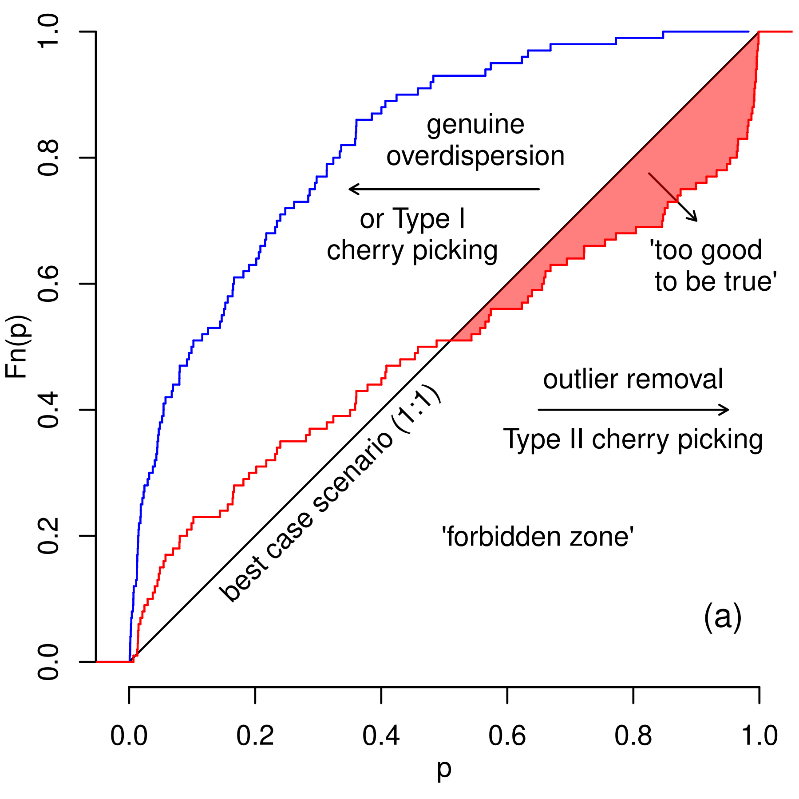
This section demonstrates the usefulness of the p-value distribution as a diagnostic tool, using synthetic examples to illustrate the different mechanisms that can give rise to underdispersion.
Section 3 identified two mechanisms that can lead to underdispersion: (1) incorrect error propagation and (2) overly aggressive outlier rejection. Without fully transparent data-processing pipelines, it is impossible to distinguish between these causes. The only geochronological method with completely transparent error propagation is the fission-track method using the external detector approach (Hurford and Green 1983).
For this type of data, the raw observations consist of paired measurements of spontaneous (\(N_s\)) and induced (\(N_i\)) track counts, obtained by human observers (or by computer algorithms trained by human observers; Nachtergaele and De Grave 2021; Boone et al. 2025). The precision of the fission track age estimates is entirely determined by these two values, so that the uncertainty \(s[N_s/N_i] = (N_s/N_i) \sqrt{1/N_s+1/N_i}\) (Galbraith 1981). Because \(N_s\) and \(N_i\) are typically small (generally fewer than 100 and often fewer than 10), the precision of single-grain fission track age estimates is usually low compared to that of other (mass spectrometer-based) geochronometers. To improve precision, it is customary to analyse multiple grains (typically \(n=20\)) per sample and to average or pool their counts.
Before pooling multiple fission track measurements and treating them as single grain, it is important to verify that the data are homogeneous—that is, consistent with a single true age. This can be assessed with the following test statistic:
\[\chi^2 = \dfrac{1}{N_{s\ast}\,N_{i\ast}} \sum\limits_{j=1}^{n}\dfrac{\left(N_{sj}\,N_{i\ast}-N_{ij}\,N_{s\ast}\right)^2} {N_{sj}-N_{ij}}\]
where \(N_{sj}\) and \(N_{ij}\) represent the \(j\)th (out of \(n\)) \(N_s\) and \(N_i\) values, \(N_{s\ast}\equiv\sum_{j=1}^nN_{sj}\) and \(N_{i,\ast}\equiv\sum_{j=1}^nN_{ij}\). Under \(H_0\), this definition of \(\chi^2\) follows a chi-squared distribution with \(n-1\) degrees of freedom (Galbraith and Laslett 1993).
Because fission track analysis is performed by human observers, analysts must take particular care to avoid bias. Various strategies can be used to minimise this risk. Arguably the most robust approach for acquiring external detector data is to count spontaneous and induced fission tracks separately. Under this procedure, a set of \(n\) grains is counted first, followed by their corresponding \(n\) mica images (or vice versa). This results in the following sequence of measurements: \(N_{s1}, N_{s2}, \ldots, N_{sn}\), \(N_{i1}, N_{i2}, \ldots, N_{in}\).
This ‘block counting’ design minimises the risk of unconscious bias, particularly when samples are analysed blindly, i.e. without the analyst knowing the origin or even the name of the sample being counted. Although this approach is used in some studies, most laboratories adopt a different procedure in which the analyst alternates between grains and mica images. This produces an ‘interleaved’ sequence of measurements: \(N_{s1}, N_{i1}, N_{s2}, N_{i2}, \ldots, N_{sn}, N_{in}\).
The interleaving pattern is not always chosen by the analyst; it may be imposed by the data acquisition software. A potential drawback of this design is that it may lead analysts to consciously or subconsciously converge on a particular \(N_s/N_i\) ratio. Once the first pair of track counts has been obtained, the analyst effectively ‘knows’ the result, which may influence the selection criteria for subsequent grains. This type of behaviour can be simulated as follows:
Generate \(n\) random values \(r_j\) from a lognormal distribution with location parameter \(\mu\) and dispersion parameter \(\sigma\);
Generate \(n\) pairs of \(N_{sj}\) and \(N_{ij}\) values from binomial distributions with parameters \(\theta_j = r_j/(1+r_j)\) and sample sizes \(N_j = N_{sj} + N_{ij}\), where \(N_j\) is a random integer;
For \(j=1\rightarrow{n}\), perform a chi-squared test on the first \(j\) pairs of \(N_s\) and \(N_i\) values. If the test fails, adjust \(N_{sj}\) and \(N_{ij}\) until it passes, then proceed.
The results of this numerical simulation are shown in Figure 2. It is important to note that observer drift is only one possible mechanism for underdispersion, assuming that the bias arises during fission track analysis. Alternative (or additional) biases may occur post hoc, through adjustments to fission track counts after the original data acquisition. This second type of bias affects block counting method and interleaved experimental design equally and is analogous to the bias that can arise when removing outliers from weighted means, as discussed in Section 5.2.
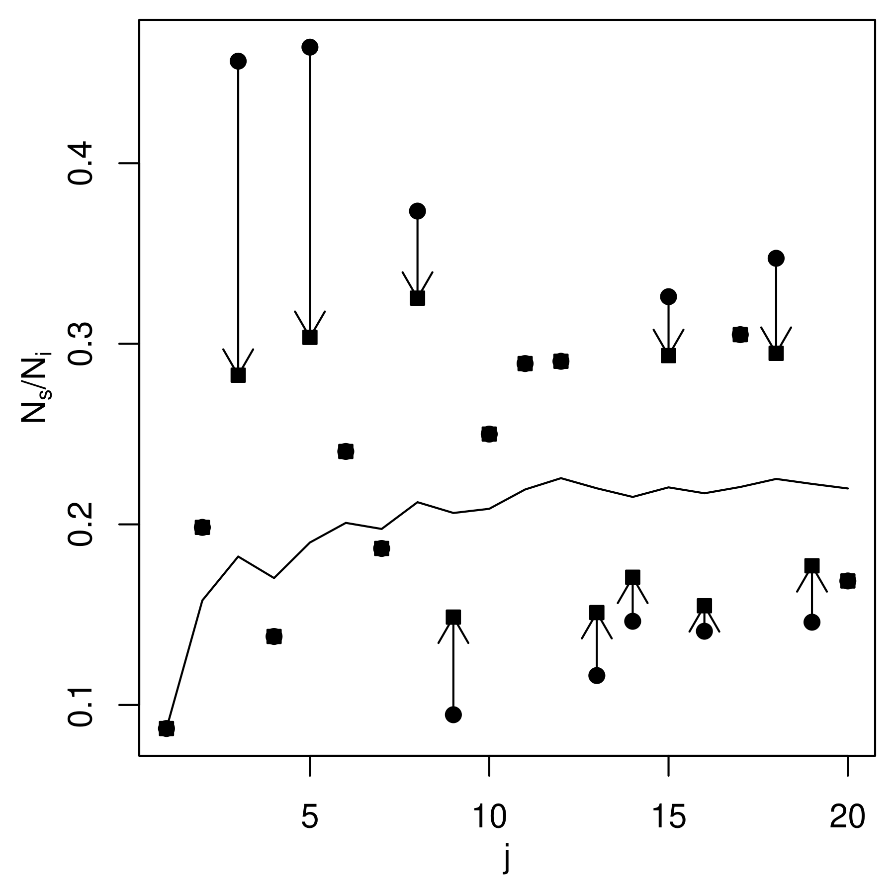
Consider a collection of \(n\) zircon crystals, which all formed at exactly the same time, \(t\). Suppose that the zircon crystals were dated by the U–Pb method, yielding \(n\) dates \(\hat{t}_i\) with analytical uncertainties \(s[\hat{t}_i]\) (for \(1\leq{i}\leq{n}\)). Then a precise estimate for \(t\) can be obtained by taking the weighted mean of the \(n\) zircon dates:
\[\bar{t} = \dfrac{\sum_{i=1}^{n}\hat{t}_i/s[\hat{t}_i]^2} {\sum_{i=1}^{n}1/s[\hat{t}_i]^2}\]
The accuracy of this formula hinges on the assumption that the true ages of all the zircon grains are identical. This assumption can be tested by redefining the chi-square statistic:
\[\chi^2 = \dfrac{1}{n-1} \sum\limits_{i=1}^n \left(\dfrac{\hat{t}_i-\bar{t}}{s[\hat{t}_i]}\right)^2\]
Small values of \(\chi^2\) indicate good agreement with the hypothesis that all ages are identical, whereas large values suggest that this assumption is less likely to hold. Several mechanisms can lead to this outcome, including (1) the presence of xenocrysts, (2) common Pb, (3) Pb-loss, and (4) genuine outliers. Failure of the chi-squared test requires that the assumption of age homogeneity be dropped in favour of a more complex model that captures these scenarios. If one is willing to make the assumption that the dispersion is entirely caused by genuine outliers, then the dataset can be trimmed until the dataset passes the chi-squared test. This procedure can be simulated as follows:
Calculate the p-value for the full dataset of \(n\) dates.
For \(i=1\rightarrow{n}\), leave out the \(i\)th measurement and calculate the p-value for the remaining \(n-1\) analyses; call these values \(p_i\);
Identify the aliquot with the highest value of \(p_i\), and permanently remove it from the dataset;
Recursively repeat steps [it:X2full]–[it:remove_outlier] for the surviving dates until the dataset no longer fails the chi-squared test.
This procedure is illustrated in Figure 3 using a synthetic but realistic zircon U–Pb age distribution that includes both young and old tails.
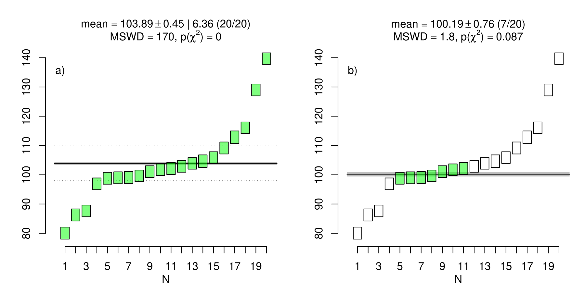
Most mass-spectrometer based geochronometers are based on the radioactive decay of a parent nuclide \(P\) to a daughter nuclide \(D\) in the presence of a non-radiogenic ‘sister’ isotope \(d\). In general, \(D\) consists of a mixture of radiogenic and non-radiogenic components, whose relative contributions can be estimated by analysing multiple cogenetic aliquots and fitting a straight line through their isotopic ratios. The isochron is then defined as \(y_i = a + b \, x_i\) where \(y_i = P_i/d_i\) and \(y_i = D_i/d_i\) for conventional isochrons, and \(x_i = P_i/D_i\) and \(y_i = d_i/D_i\) for ‘inverse isochrons’. The intercept (\(a\)) and slope (\(b\)) are a function of the non-radiogenic \(D/d\)-ratio and the age of the sample (Li and Vermeesch 2021).
\(x_i\) and \(y_i\) are associated with analytical uncertainties, which are correlated because they share a common denominator (Pearson 1896; Chayes 1949). The fit parameters (and hence age) can be estimated by weighted least squares regression (York et al. 2004). The chi-squared statistic can be redefined again to quantify the degree to which the analytical uncertainties explain the scatter of the data around the best fit line. Let \(\{X_i,Y_i\}\) be \(n\) pairs of \(\{x,y\}\)-measurements and their (co)variances \(s[X_i]^2\), \(s[Y_i]^2\) and \(s[X_i,Y_i]\):
\[\chi^2 = \sum\limits_{i=1}^{n} \left[ \begin{array}{@{}cc@{}} X_i - \hat{x}_i \\ Y_i - \hat{a} - \hat{b} x_i \end{array} \right]^T \left[ \begin{array}{@{}cc@{}} s[X_i]^2 & s[X_i,Y_i] \\ s[Y_i,X_i] & s[Y_i]^2 \end{array} \right]^{-1} \left[ \begin{array}{@{}cc@{}} X_i - \hat{x}_i\\ Y_i - \hat{a} - \hat{b} \hat{x}_i \end{array} \right]\]
where \(\hat{a}\) and \(\hat{b}\) are the best fit intercept and slope, and \(\hat{x}_i\) are the fitted \(x\)-values, which are obtained by minimising \(\chi^2\) with respect to \(a\) and \(b\). Under the hypothesis that the differences between the measured \(\{X_i,Y_i\}\) and the fitted values \(\{\hat{x}_i,\hat{a}+\hat{b}\,\hat{x}_i\}\) is purely caused by analytical uncertainty, \(\chi^2\) follows a chi-squared distribution with \(\nu = n-2\) degrees of freedom. Failure of the homogeneity test may be caused by (1) heterogeneity of the non-radiogenic component (i.e., differences in \(a\) between the different aliquots); (2) diachronous isotopic closure of the geochronometer (i.e., differences in \(b\) between different aliquots); or both. Naive outlier removal follows a similar procedure as for the weighted mean, by cycling through the measurements and removing those that result in the greatest reduction of \(\chi^2\) (Figure 4).
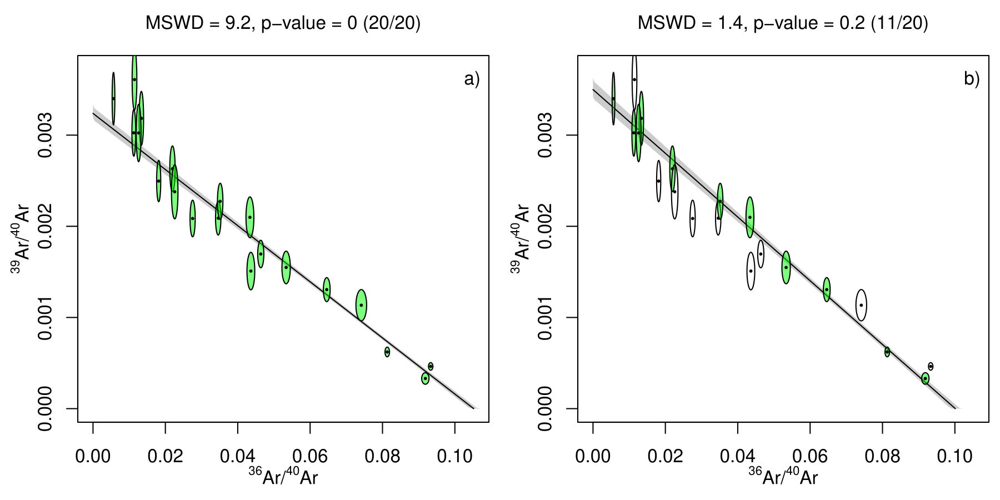
The U–Pb method comprises two independent chronometers based on the radioactive decay of two isotopes of uranium (238U and 235U) to two lead isotopes (206Pb and 207Pb, respectively), providing an internal quality control mechanism that is absent from most other geochronometers. Concordance of the two clocks can be tested using the following chi-squared statistic: \[\chi^2 = \left[ \begin{array}{@{}c@{}} X - \left(e^{\lambda_{235}t_c} - 1\right) \\ Y - \left(e^{\lambda_{238}t_c} - 1\right) \end{array} \right]^T \left[ \begin{array}{@{}cc@{}} s[X]^2 & s[X,Y] \\ s[X,Y] & s[Y]^2 \end{array} \right]^{-1} \left[ \begin{array}{@{}c@{}} X - \left(e^{\lambda_{235}t_c} - 1\right) \\ Y - \left(e^{\lambda_{238}t_c} - 1\right) \end{array} \right] \]
where \(X\) and \(Y\) are the measured 207Pb/235U and 206Pb/238U ratios; \(s[X]^2\), \(s[Y]^2\) and \(s[X,Y]\) their (co)variances; and \(t_c\) is the ‘concordia age’, which is obtained by minimising \(\chi^2\). If the 207Pb/235U and 206Pb/238U ages are perfectly concordant and analytical uncertainty is the only source of scatter, then \(\chi^2\) follows a chi-squared distribution with \(\nu = 1\) degree of freedom (Ludwig 1998).
Laser ablation inductively coupled plasma mass spectrometry (LA-ICP-MS) is a widely used technique for in-situ U–Pb geochronology. It produces raw instrument data consisting of time series of 206Pb, 207Pb, and 238U measurements (in V, A, or Hz), which comprise two components: the ‘background’, measured before laser ablation, and the ‘signal’, measured during laser ablation. A key step in the data reduction process is the definition of ‘selection windows’ that group ‘stable’ segments of the mass spectrometer signal. Some data reduction packages support this process by providing an interactive ‘live concordia’ diagram, in which the effect of the selection window on the inferred U–Pb composition is immediately visible (e.g., Petrus and Kamber 2012). Although such interactive user interfaces can be helpful, they also introduce a mechanism for generating isotopic compositions that are ‘too good to be true’ (Figure 5).
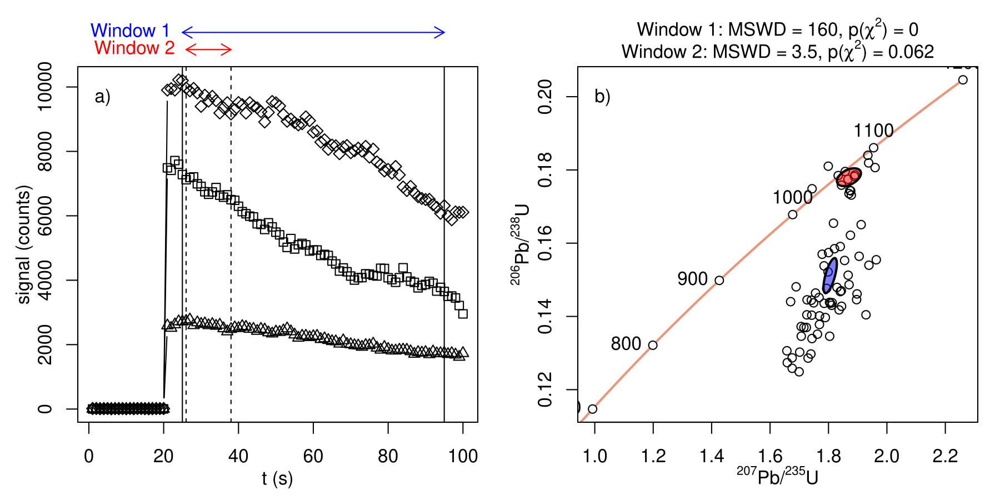
Having reviewed some key mechanisms that may result in underdispersion on the sample level, this section will consider their effect on a collection of multiple samples. Let us first consider the simplest case of a collection of ‘perfect’ samples, which exhibit no overdispersion whatsoever.
For fission track data and weighted means, ‘perfection’ means that all the analysed grains have exactly the same age, with the scatter of the dates being exclusively caused by analytical uncertainty. For isochrons, ‘perfect’ data mean that the true (but unknowable) isotopic ratios fall exactly on an isochron, with the scatter of the measured isotopic ratio estimate being only caused by analytical uncertainty. Finally, for concordia age calculation, the true (but unknown) 207Pb/235U and 206Pb/238U ratios of ‘perfect’ data fall exactly on the Wetherill concordia line, and the dispersion of the measured 207Pb/235U and 206Pb/238U ratio estimates is due to analytical uncertainty alone. For a collection of such ‘perfect’ samples (for all of which \(H_0\) is true), the ECDF of a random selection of p-values would stradddle the 1:1 line. Therefore, on average 5% of the samples would erroneously be labelled as being overdispersed when in fact they are not, resulting in a Type I error.
The outlier rejection procedures outlined in Sections 5.1–5.4 reduce the proportion of Type I errors to zero, causing the ECDF of the p-values to shift to the right and slightly below the 1:1 line (blue in Figure 6a). This can be referred to as ‘mild’ underdispersion. More extreme degrees of underdispersion imply that the analyst has used a higher p-value cutoff than usual (e.g., \(\alpha=0.5\) instead of \(\alpha=0.05\)). Alternatively (and equivalently), more extreme degrees of underdispersion can also arise from the use of MSWDs instead of p-values to identify ‘outliers’. Suppose that a collection of unequally sized samples was culled until MSWD \(\leq\) 1. Then this MSWD-cutoff would be equivalent to \(\alpha=P(\chi^2>4|\nu=4)=0.41\) for \(n=5\), to \(\alpha=P(\chi^2>19|\nu=19)=0.46\) for \(n=20\), and to \(\alpha=P(\chi^2>99|\nu=99)=0.49\) for \(n=100\). The p-value distribution for these extreme levels of outlier rejection would fall further below the 1:1 line, providing the diagnostic signature of ‘severe’ underdispersion (red in Figure 6a).
Having considered the effect of outlier rejection on ‘perfect’ samples, let us now move on to more realistic scenarios that exhibit some degree of overdispersion. Without outlier rejection, the p-value distribution of such an ‘imperfect’ collection of studies would fall completely above and to the left of the 1:1 line. Depending on the severity of the overdispersion, there may or may not be any p-values exceeding \(\alpha=0.05\). If all the samples in the collection were overdispersed (so that all \(H_0\) are false), then any p-value exceeding \(\alpha\) would constitute a Type II error (false negative). Subjecting the overdispersed collection of samples to outlier rejection shifts the p-value distribution to the right and below the 1:1 line, greatly increasing the number of Type II errors (blue and red in Figure 6b).
Finally, let us consider the most realistic scenario, in which a collection of multiple samples, exhibiting different degrees of overdispersion, either have or have not been subjected to outlier rejection. The resulting p-value distribution of such a mixture would consist of a steep segment of low p-values obtained from samples that have not undergone outlier removal, followed by a convex-upward segment marking examples that have undergone outlier removal. An important observation is that only extreme levels of outlier removal manage to push the p-value distribution below the 1:1 line (orange in Figure 6b).
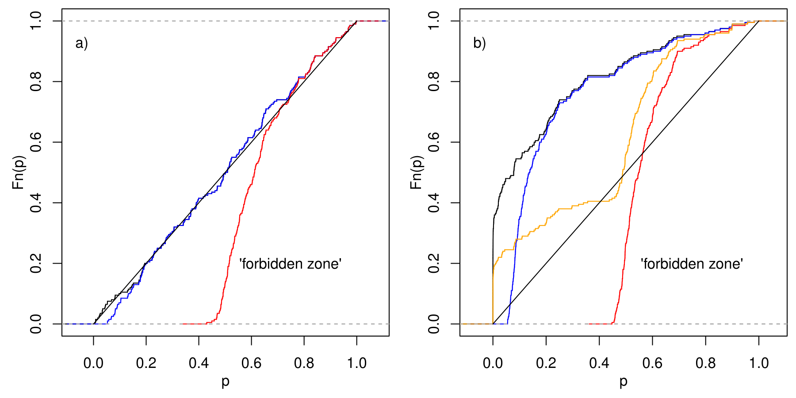
Section 5 reviewed the principal mechanisms that may cause underdispersion in geochronology, using synthetic examples. Section 5.5 showed that, in extreme cases, excessive outlier rejection may cause the p-value distribution of a collection of multiple studies to fall below the 1:1 line and in the ‘forbidden zone’. This Section will investigate whether such excessive outlier rejection occurs in real datasets. It is important to reiterate that, the most extreme cases nothwithstanding (MSWD\(= 0\), \(p = 1\)), it is generally not possible to identify with certainty that any given sample is ‘too good to be true’. However, a clearer picture emerges when considering multiple studies together. The purpose of this meta-analysis is not to point fingers at individual researchers. As explained in the previous sections, outlier rejection is often done for good reasons and many cases of underdispersion may be unintentional.
Fission track analysis is especially well suited to detect cherry picking, for two reasons. First, error propagation of fission track data (using the external detector method) is so straightforward (Green 1981) that cherry picking is the sole mechanism that can push the p-value distribution into the ‘forbidden zone’ (Section 5.1). Second, unlike most other geochronometers (which are based on isotopic ratio estimates obtained by mass spectrometry), fission track analysis is based on manual counts of damage tracks under an optical microscope. This manual process is particularly prone to observer bias (Tamer et al. 2025), providing a particularly compelling reason to investigate fission track data for underdispersion.
A useful ‘baseline result’ is provided by a dataset of 176 p-values
for fission track reference materials analysed by (Iwano, Danhara, and Hirata 2018). By
definition, reference materials are expected to exhibit little or no
overdispersion. However, in reality even these ‘ideal’ materials are
shifted towards low p-values compared to the uniform distribution
(Figure 7). This confirms that overdispersion is
the rule rather than the exception in nature. If even geochronological
reference materials exhibit (mild) overdispersion, then the p-values of
‘real’ samples –with all their natural complexity– should definitely be
prohibited from plotting below the 1:1 line in ECDF-space. However, a
compilation of fission track analyses from the geochron.org
database indicates otherwise.
At the time of writing, geochron.org contained 434
fission track samples, 201 of which reported p-values. All these samples
used the external detector method (Hurford and Green 1983), whose error
propagation is straightforward (Green 1981) and standardised. Instead of
plotting towards the left of Iwano, Danhara, and Hirata (2018)’s
p-value distribution, the geochron.org data plot nearly
completely to the right of the reference materials (Figure 7). One third of the p-values plot below
the 1:1 line.
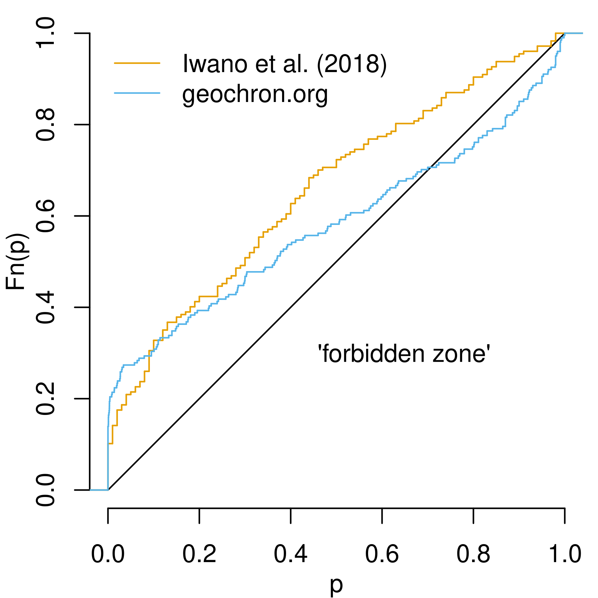
The second real-world underdispersion study will investigate mass-spectrometer based geochronology data, including U–Pb, 40Ar/39Ar, Rb–Sr and other methods. Whereas outlier rejection of fission track data nearly always done by p-value, other geochronometers generally use the MSWD to guide data selection. Because the acronym ‘MSWD’ is exclusively used in geochronology (with other fields of science referring to the statistic as the ‘reduced chi-squared statistic’), it is easy to extract measures of geochronological dispersion from the scientific literature.
A database of 100 high profile geochronological papers was compiled with the aptly named ‘Publish or Perish’ software (Harzing 2010), using ‘MSWD’ as the sole keyword, and ‘Nature’ as the target journal. The search was restricted to Nature journals (including Nature, Nature Geoscience, Nature Communications and Scientific Reports) for two reasons. First, they are the most ‘impactful’ publications, which should be held to the highest standards. Second, Nature publications provide consistently rich supplementary data archives. These are necessary to recover the degrees of freedom of the MSWD-statistics, which are needed to compute the corresponding p-value. Some papers report two p-values per sample, one for the complete dataset, and one for the ‘cleaned’ data with ‘outliers’ removed. For these cases both values were included in the database.
The 100 publications contain 650 MSWD-values, 36.3% of which are less than one. The ECDF of the corresponding p-values is shown in black in Figure 8a. Only the bottom 85% of the curve lies above the 1:1 line, while the remaining 15% of the p-value distribution falls within the forbidden zone of impossibly good results. The right-hand tail of the distribution is distinctly concave upwards: 9% of the p-values exceed 0.95; 5.5% exceed 0.99; 3.1% exceed 0.999; and 2.1% exceed 0.9999. In other words, one in fifty samples exhibits ‘Mendel-levels’ of underdispersion, a frequency 200 times higher than expected even under the most optimistic statistical scenario. Closer inspection reveals that the most extreme p-values are concentrated in a small subset of the publications, which consequently have a disproportionate influence on the fraction of the p-value distribution falling within the forbidden zone.
As mentioned before, there are two possible causes for the observed underdispersion. One possibility is incorrect error propagation. Mass spectrometer data processing is complex and it is possible that some uncertainties in the geochronological literature have been overestimated. For example, this could happen by failure to distinguish between systematic and random sources of uncertainty (Renne et al. 1998). A second possible cause of underdispersion is excessive outlier rejection.
To distinguish between the two causes of underdispersion, it is useful to group the p-values for different chronometers (Figure 8b). Note that the Nature compilation does not contain any fission track data. The two largest groups are U–Pb (320 p-values) and Ar–Ar (119 p-values). Both have ECDFs with similar proportions of analyses falling in the forbidden zone, at 21% and 18.5% respectively. It seems unlikely that the data reduction software for both methods (which use different types of mass spectrometers) would be equally flawed. It is therefore also unlikely that incorrect error propagation is the sole cause of underdispersion. Excessive outlier rejection is a more likely culprit. This conclusion is corroborated by grouping the collection of p-values according to the statistical method of analysis.
Isochrons exhibit the lowest percentage of p-values in the forbidden zone, at 11% (out of 223 p-values). This increases to 15% for weighted means (316 p-values) and 20% for 40Ar/39Ar plateaux (80 p-values). It is not surprising that the latter exhibit the strongest evidence for underdispersion, as the definition of a 40Ar/39Ar plateau involves selecting measurements that overlap within analytical uncertainty (Dalrymple and Lanphere 1969; Jourdan, Renne, and Reimold 2009). Plateaux are, therefore, ‘cherry picked’ by definition.
Finally, the large size of the Nature database provides an opportunity to investigate the temporal evolution of the underdispersion problem. To this end, the database was divided into two approximately equal-sized subsets: 314 papers published before 2019 and 336 papers published from 2019 onwards. The p-value distributions of the two subsets provide no evidence for an increased acceptance of overdispersion. On the contrary, the situation appears to be getting worse, with the fraction of impossibly good results increasing from 11.5% among the older papers to 17.2% among the more recent publications (Figure 8c).
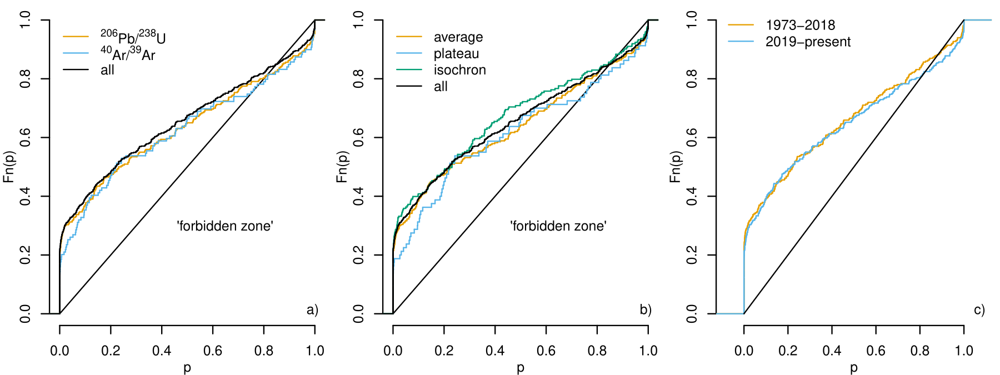
The Geologic Time Scale (GTS) is a standardised framework that organises Earth’s ca. 4.56 billion-year history into a coherent timeline, enabling scientists to correlate rock records and place geological, climatic, and biological events in chronological order. It originated in the 18th–19th centuries as a relative system based on biostratigraphy. In the 20th century, the development of radiometric dating transformed the GTS into a calibrated system that integrates relative stratigraphy with absolute numerical ages, allowing increasingly precise timing of events (Holmes 1947).
Over time, international efforts, particularly through the International Commission on Stratigraphy, have standardized boundaries using globally agreed reference points (Global Boundary Stratotype Sections and Points – GSSPs) and continually refined the scale as new data emerge. The latest synthesis, GTS2020, incorporates advances in geochronology, astrochronology, and stratigraphic correlation to produce a more precise and highly resolved timeline (Gradstein et al. 2020; Schmitz 2020).
The GTS places great emphasis on analytical precision. However, accuracy is equally if not more important. Because accuracy and precision can be competing targets (‘bias-variance tradeof’, see Section 7), the p-value distribution of the GTS is of particular interest. The geochronological database underlying GTS2020 contains 407 entries. It was not possible to obtain p-values for all these entries because (1) some dates were derived from unpublished sources; (2) some dates were locked behind unscalable pay walls; and (3) seventeen age constraints were based on single grain analyses, for which it is not possible to calculate an MSWD3. Nevertheless, going back to the original publications cited in the GTS2020 database did yield 355 MSWD-values and sample sizes, from which 355 p-values were calculated.
The overall distribution of these p-values plots close to the 1:1 line, reflecting the GTS committee’s effort to identify discrete age components that are consistent within the analytical uncertainties. Nevertheless, 25% of the age constraints plot slightly below the 1:1 line, including 5% of the U–Pb data and 90% of the Ar–Ar data (Figure 9).
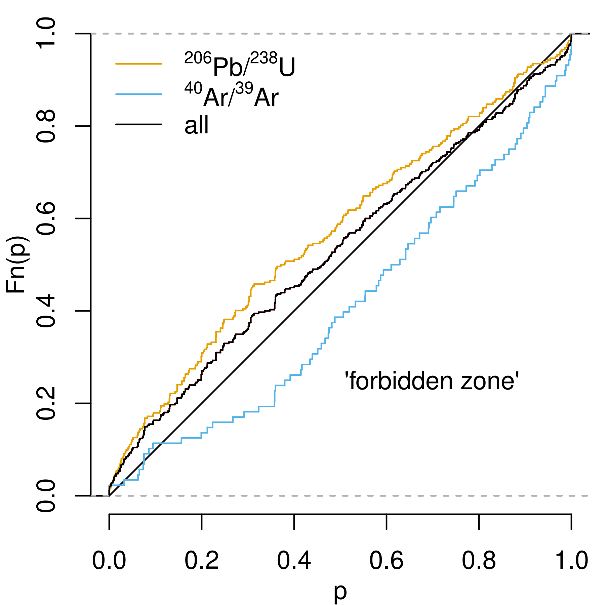
All the p-value distributions presented thus far were extracted from collections of multiple studies, representing dozens of samples. This was necessary because most geochronological uses of the chi-squared test evaluate the consistency between aliquots of the same sample. Therefore, each sample corresponds to one MSWD value and, hence, one p-value. The single-grain concordia age calculation procedure of Section 5.4 is an exception to this rule. It tests the agreement between the 206Pb/238U and 207Pb/235U clocks within each aliquot. Therefore, a single detrital zircon U–Pb dataset can produce an entire p-value distribution.
As explained in Section 5.4, modern LA-ICP-MS data reduction software allows geochronogists to ‘optimise’ their choice of selection windows using a ‘live concordia’ diagram, providing a mechanism to generate underdispersed datsets. A literature review has revealed some examples of this in published datasets. However, presenting those datasets here would single out individual researchers. This is not the purpose of the current study, which seeks to evaluate the occurrence of underdispersion in geochronology as a whole. Therefore, the inappropriate use of ‘live isochrons’ will not be illustrated with a published dataset, but with a new one.
Figure 10 presents a dataset of 150 zircon U–Pb measurements for an inter-laboratory comparison sample prepared by Dr. M. Dröllner (University of Göttingen). The full results of the comparison study will be presented in a forthcoming publication. Its details are irrelevant for the purpose of the present investigation, which merely aims to quantify the dispersion of the data obtained by a single laboratory.
The sample was analysed at University College London using an Agilent
7900 ICP-MS coupled to a New Wave NWR193 excimer laser, operated at
10 Hz with a spot size of 25 , using a 5 s warmup time, followed by 25 s
of ablation and 5 s of washout. Data reduction was performed with
KJ (P.
Vermeesch 2026), using Plešovice and 91500 zircon
(Sláma et
al. 2008; Wiedenbeck et al. 1995) as primary reference materials
and GJ-1 (Jackson et al.
2004) as a secondary standard. Raw data and FAIR data reduction
procedures are provided in the supplementary information (Pieter Vermeesch
2026).
The blue error ellipses in Figure 10a) show
the results obtained using KJ’s default selection windows,
without manual adjustment and presented as a Wetherill concordia diagram
generated in IsoplotR 7.0 (P. Vermeesch 2018). The red ellipses
show the same sample after ‘optimal’ signal window adjustment, which was
achieved by exploring all continuous sections of the signal of at least
50 integrations long, and selecting the window yielding the lowest MSWD
using the definition of Equation 5. Unsurprisingly,
this extreme example of cherry picking results in a p-value distribution
in which nearly 90% of the 150 grains are ‘too good to be true’.
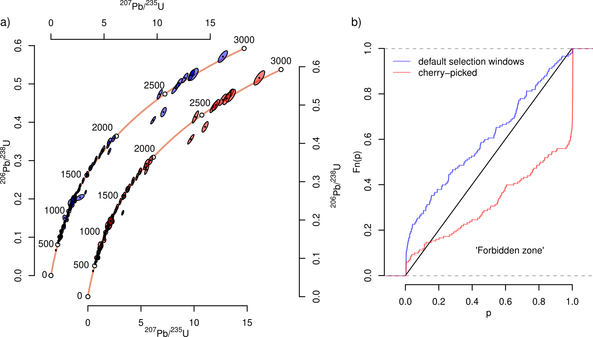
There are many mechanisms that can produce overdispersed datasets. In fact, a case could be made that overdispersion should be the rule rather than the exception (Kalsbeek 1992; Pieter Vermeesch 2025). In comparison, it is not so easy to explain underdispersion. Excessive outlier detection is the most likely culprit behind the underdispersion observed in all the case studies of Section 6. The synthetic examples of Section 5.5 showed that, in a meta-analysis that combines overdispersed datasets with underdispersed ones, it is not easy to pull the p-value distribution into the ‘forbidden zone’. Doing so requires extremely high levels of outlier rejection. All the case studies presented in this paper show evidence for such extreme outlier rejection in at least some of the samples.
For example, the fact that one third of the fission track data plot below the 1:1 line of the p-value distribution plot indicates that at least one third of the fission track samples have been cherry picked to a degree that cannot be explained by the ‘observer drift’ phenomenon of Section 5.1. And the fact that 90% of the Ar–Ar data in the GTS plot in the ‘forbidden zone’ suggests that geochronologists apply more aggressive outlier rejection criteria than the 5% p-value cutoff advocated by Jourdan, Renne, and Reimold (2009). It appears that at least some analysts aim to push the p-values of their data as close to unity as possible. This reflects a fundamental misunderstanding of practice of statistical hypothesis testing.
Although the evidence for excessive outlier rejection is clear, one might still ask whether it actually matters. After all, Gregor Mendel’s data were almost certainly cherry-picked, yet the scientific conclusions drawn from them remain valid. Does the same hold true for geochronology? There are at least four answers to this question.
First, it should be emphasised that the burden of proof should not rest with those who identify underdispersion to demonstrate its importance. Rather, it should lie with those who apply excessive outlier rejection to show that the underdispersion does not matter. It may be true that eliminating underdispersion would not change the scientific conclusions of most studies. However, the possibility that it could affect the conclusions of some studies is concerning. Moreover, in cases where excessive outlier rejection does not alter the conclusions, one could argue that such rejection serves no meaningful purpose.
Second it is important to point out a fundamental difference between Mendel’s pea experiment and the geochronological context. Mendel’s pea experiment —and Fisher (1936)’s reanalysis— tested a ‘natural’ binary hypothesis, aiming to find out if selected traits of peas are random or inherited. Prior to the experiment, there was a real probability that the null hypothesis (random allocation of traits) was true. In contrast, the geochronological null hypothesis (the data are perfectly homogeneous) cannot be true (Pieter Vermeesch 2025). Therefore, the purpose of geochronological chi-squared tests is not to test if the data are overdispersed, but to test whether the overdispersion is statistically significant. In statistical terms, the probability of committing a Type I error was 5% for Mendel’s experiment, and 0% for geochronological experiments. Consequently, the probability of committing a Type II error is much higher for geochronological datasets then for Mendel’s pea data.
Third, attention should be drawn to the important phenomenon of the ‘bias-variance’ tradeof in mathematical statistics. When estimating a numerical quantity such as the mean, slope or intercept of a collection of measurements, statistical precision (‘variance’) and accuracy (‘bias’) tend to be competing goals. A classic example is the Bessel correction of the sample standard deviation. Given a collection of \(n\) measurements \(\{x_1,\ldots,x_n\}\) drawn from a normal distribution with mean \(\mu\) and standard deviation \(\sigma\), the mean can be estimated as \(\hat{\mu} = \sum_{i=1}^n x_i\) and the standard deviation as \(\hat{\sigma} = \sum_{i=1}^{n}(x_i-\mu)^2/n\) if \(\mu\) is known, or as \(\hat{\sigma} = \sum_{i=1}^{n}(x_i-\hat{\mu})^2/(n-1)\) if \(\mu\) is unknown. The denominator \(n-1\) in the latter case inflates the variance (and hence reduces the precision) but reduces the bias (and increases the accuracy) of the estimate for \(\sigma\).
Underdispersion creates the opposite situation, whereby excessive outlier rejection artificially improves precision4 at the expense of accuracy. This is particularly pertinent for the Geologic Time Scale. As reviewed in Section 6.3, great efforts are made to improve the precision of the chronostratigraphic calibration that underlies the GTS. It would be unfortunate if this focus on precision came at the expense of accuracy, which is arguably more important. When accuracy is not guaranteed, precision loses its meaning. Fortunately, the overall degree of overdispersion of the GTS is relatively small compared to some of the other case studies. Nevertheless, the underdispersion of the Ar–Ar data is concerning.
Fourth, when data appear too good to be true, it suggests that valid measurements have been improperly excluded, leading to the loss of potentially valuable information. Overdispersion can reflect processes such as magma residence times (Rioux et al. 2012) or cooling rates during tectonic exhumation (Galbraith and Laslett 1993). Thanks to advances in mass spectrometry, geochronologists are increasingly capable of detecting such subtle complexities (Phillips and Matchan 2013). Overdispersion is not a flaw to be eliminated but a feature to be measured and interpreted (Kalsbeek 1992; Pieter Vermeesch 2025). Excessive outlier rejection discards all this information, representing an opportunity cost for scientific discovery.
This paper has introduced a new graphical method to detect underdispersion in collections of geochronological data. The frequency distribution of the p-values for sample homogeneity may be negatively skewed with respect to a uniform distribution but must not be positively skewed. The area below the 1:1 line of a cumulative distribution plot marks a ‘forbidden zone’, reflecting the presence of samples whose internal consistency is unrealistically good.
Underdispersion can arise from incorrect error propagation or from
overzealous outlier rejection. Application of the p-value method to
synthetic and real datasets shows that it affects all geochronometers.
30% of the fission track data in the geochron.org database,
15% of the datasets published in Nature journals, and 25% of
the data underpinning the Geological Time Scale (GTS2020) plot in the
‘forbidden zone’ of the diagnostic plot. To consistently push such
substantial segments of the p-value distribution into the ‘forbidden
zone’ requires extreme levels of outlier rejection in which researchers
actively aim to push their MSWD to zero.
This study has not made an attempt to assess if the observed underdispersion has led to incorrect scientific conclusions. Doing so would require highlighting specific underdispersed studies, which could be perceived as pointed criticism at specific authors. As explained in Section 6, that is not the intention of this study.
In the case of the Geologic Time Scale, underdispersion has two negative effects. First, it leads to unrealistic uncertainty estimates, giving geochronologists false confidence in the chronostratigraphy. Second, and more importantly, the inflated precision comes at the cost of reduced accuracy. The magnitude of this problem varies across the timescale, depending on the degree of underdispersion of the underlying geochronological datasets.
Some of the underdispersed datasets in the GTS are old (pre-2000) and predate the increased awareness of overdispersion as a fact of life, rather than a nuisance to be removed by outlier rejection. However, these old studies have a lasting effect on the practice of geochronology. Extreme levels of outlier rejection persist in modern time scale studies because modern datasets are expected to have better age precision than old datasets. To break out of this self-perpetuating situation, it is important to recognise that the precision of some age boundaries is not limited by analytical uncertainty, but by geological complexity. Therefore, geochronologists should not be afraid to update GTS tie points with new data that are less precise (but more accurate).
Going forward, the p-value distribution can be used to help geochronologists identify when outlier rejection has gone too far. An even better solution would be to abandon the misconception that overdispersion is inherently ‘bad’. In fact, a case could be made that the opposite is true, and that low MSWD values should be treated with suspicion, not praise (Pieter Vermeesch 2025). However, in the author’s experience, overdispersed datasets are currently more likely to be rejected during peer review than tightly clustered ones, which directly and indirectly promotes underdispersion. Poorly informed reviewers may reject such datasets outright, skewing the literature toward high p-values (publication bias; Ioannidis 2005). In turn, the difficulty of publishing low p-value results incentivises aggressive outlier rejection. Peer pressure to produce ‘perfect’ data may partially or completely explain the prevalence of underdispersed geochronology data in high profile publications such as Nature.
In the case of LA-ICP-MS signal window selection, outlier rejection
occurs in early stages of the data processing pipeline, before the
isotopic ratios are calculated. Unless the raw mass spectrometer data of
such data are shared, it is impossible to undo this source of
underdispersion. Fixing this problem will require the adoption of FAIR
(Findable, Accessible, Interoperable, and Reusable) data processing
pipelines (Wilkinson
et al. 2016). Currently, geochronological results are typically
reported as small tables of processed isotopic ratios and uncertainties.
The raw mass spectrometer data and complete data processing algorithms
used to derive these results are rarely shared. This lack of
transparency creates opportunities for underdispersion. A new generation
of data reduction software such as geochron@home (Pieter Vermeesch et al.
2026) and KJ (P. Vermeesch 2026) show that this is
possible.
Finally, it is important to emphasise that outlier rejection is not always bad. Indeed, it is often unavoidable when accounting for the geological complexities inherent in the analysis of natural materials. It is desirable for such outlier rejection to be guided by auxiliary information such as mineral textures, geochemical information, or geologic relationships, rather than by a hard p-value or MSWD cutoff (Schoene et al. 2013). Ideally, the assessment of such geological factors should be done blindly, without looking at the p-values. This is the only way to avoid human-induced biases. Such blind decision-making procedures are routinely enforced in the life sciences, but are difficult to enforce in the geosciences.
Two types of cherry picking can be distinguished, each aligned with one side of the statistical significance dichotomy and named by analogy with related concepts in mathematical statistics. Type I cherry picking involves selecting data that contradict a pre-defined hypothesis. Type II cherry picking selects data that support a hypothesis.
As a concrete example of Type I cherry picking, consider a multivariate dataset (e.g., the concentration of \(N\) chemical species in \(M\) samples). It is common practice in exploratory data analysis to plot all pairs of variables against each other in an \(N\times{M}\) grid of scatter plots. When doing this it is inevitable that some of these pairs exhibit a statistically significant correlation.
Figure 11 shows 18 pairs of data, drawn from a random uniform population with no correlation. Hence, the correlation coefficient of the population (\(\rho\)) is zero. However, the estimated correlation coefficient of the data (\(r\)) is not. It varies between \(-1\) and \(+1\) as a result of random sampling variability. The degree of correlation can be formally evaluated by formulating a test statistic \(t \equiv r\sqrt{n-2}/\sqrt{1-r^2}\). We can then formulate the following hypotheses:
\(H_0\): \(x\) and \(y\) are independent (\(\rho = 0\))
\(H_a\): \(x\) and \(y\) are correlated (\(\rho \neq 0\))
\(H_0\) is true for the synthetic example, and any rejection of this hypothesis constitutes a Type I error. The probability of incurring such an error is defined by the significance cutoff \(\alpha\). However, Section 4 showed that the probability of committing a Type I error increases to \(1 - (1 - \alpha)^n\) when the number of tests is increased from 1 to \(n\). When \(n>14\), the probability of committing a Type I error exceeds that of not committing one.
Failure or refusal to account for this phenomenon is sometimes referred to as ‘p-hacking’ or ‘data dredging’. Because it increases the probability of committing a Type I error, this paper labels the phenomenon as ‘Type I cherry picking’, to emphasise the difference with the geochronologicaly context, in which data are not manipulated to lower the p-value, but to boost it.
The occurrence of Type I cherry picking is difficult to prove. It requires repeating the entire experiment to verify if the same result is obtained. Type II cherry picking is easier to detect, and radiometric geochronology is uniquely suited for this purpose. Unlike other research fields (such as genetics, say) it offers no incentives for Type I cherry picking, but ample opportunities for Type II cherry picking (Section 5). This paper promotes the cumulative distribution of the p-values as a graphical device to detect Type II cherry picking.
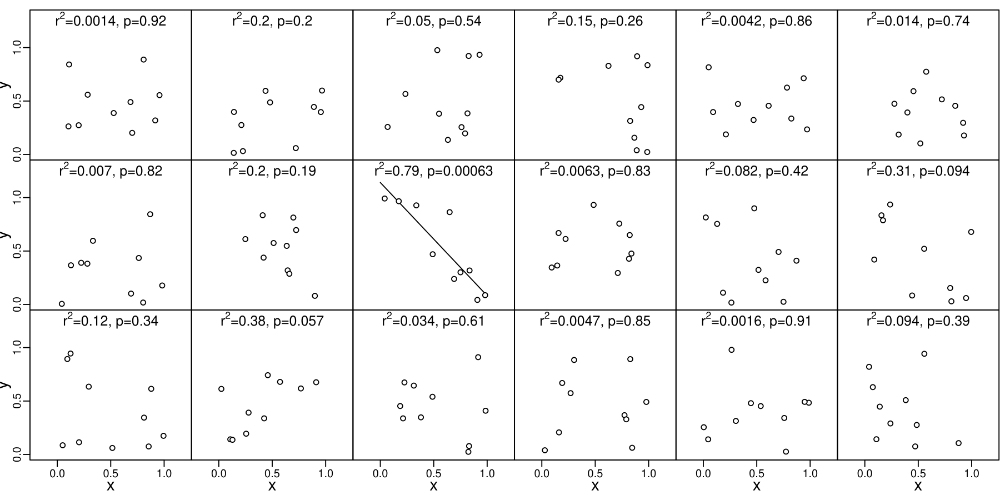
This research has been supported by the Natural Environment Research Council (grant no. NE/T001518/1). The paper benefitted from informal feedback by Andy Carter and Birk Härtel, and from constructive reviews by Marco Colombo and Blair Schoene, who also reviewed an earlier version of the paper, as did Dan Condon. Murat Tamer is thanked for his encouragement to move this work forward.
IsoplotR: a
free and open toolbox for geochronology.” Geoscience
Frontiers 9: 1479–93. https://doi.org/10.1016/j.gsf.2018.04.001.
Statistical power is defined as the probability of rejecting a false hypothesis. A powered test specifies in advance the sample size needed to detect a particular effect – for example, a 50% reduction in mortality.↩︎
In statistics, the increased occurrence of type-I errors caused by multi-testing is usually addressed by adjusting the cutoff limit, e.g. by reducing \(\alpha\) to \(\alpha/n\) (a Bonferroni correction).↩︎
Note that selecting a single analysis out of a collection of multiple measurements could be considered the ultimate degree of cherry picking. However, single grain analyses were omitted from this study, resulting in a conservative (optimistic) picture of outlier rejection.↩︎
In theory, outlier rejection can also lower precision as it reduces sample size. However, in practice cherry picking nearly always improves precision as its main purpose is to reduce the scatter of the data.↩︎